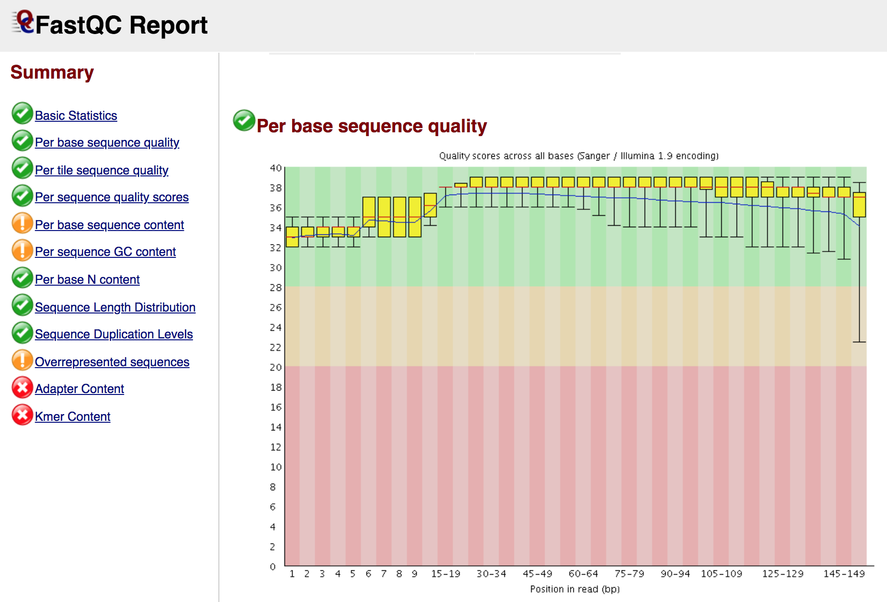

2. Quality filtering of reads
2.1. Copy the data
First of all you have to copy the raw sequencing data (in fastq format) from the shared data folder into your home.
After logging in the virtual machine you are in your home, to check you actual path use the command pwd (print work directory). Type this command every time you are not sure in which folder (path) you are:
# print current path (directory)
pwd
Everywhere you are, to go back to your home just type cd.
# go back to your home
cd
Copy the fastq files from the shared folder inside the new folder
cp -r /data/course/day4_claudio/fastq .
2.2. Reads quality control
The reads generated by a sequencing platform are delivered in fastq format. The first step of the analysis of raw sequences is the quality-control.
To do that, we will use FastQC, which provides a modular set of analyses that you can use to have a first impression of whether your data has any problems of which you should be aware before doing any further analysis.
To run FastQC type the following command:
fastqc filename.fastq.gz
To analyze multiple fastq files you can run FastQC as follows:
fastqc *.fastq.gz
At the end of the analysis, FastQC generates for each input file a summary report, like in the screenshot below:
Note
You can download the reports of FastQC (and any other file) in your laptop with the command
scp(Secure Copy), which allows files to be copied to, from, or between different hosts. It uses ssh for data transfer and provides the same authentication and same level of security as ssh. For example, to copy from a remote host (our server) to your computer:scp username@remotehost:/full_path_to_file /some/local/directory
To copy a folder you need to call the option
-rscp -r username@remotehost:/full_path_to_file /some/local/directory
If you are using a
pemfile to connect to the server, you have to use in order to download the files:scp -i filename.pem -r username@remotehost:/full_path_to_file /some/local/directory
2.3. Reads quality filtering
Reads filtering is a crucial step as it will affect all downstream analyses. One of the important things to do is to trim the adapters that were used during the preparation of the genomic libraries.
For this step we will use the program AdapterRemoval, which performs adapter trimming of sequencing reads and subsequent merging (collapse) of paired-end reads with negative insert sizes (an overlap between two sequencing reads derived from a single DNA fragment) into a single collapsed read.
We will analyse the DNA sequences of an ancient sample sequenced in single-end. With this command, the trimmed reads are written to output_single.truncated.gz, the discarded FASTQ reads are written to output_single.discarded.gz, and settings and summary statistics are written to output_single.settings.
AdapterRemoval --file1 filename_R1.fastq --file2 filename_R2.fastq --basename filename --minlength 30 --trimns --minquality 15 --trimqualities --collapse --gzip
Here some of the options of AdapterRemoval:
Option |
Function |
|---|---|
-file1 string |
Forward reads input file(s) in fastq(.gz) file format. Required option (single-end reads). |
-file2 string |
Reverse reads input file(s) in fastq(.gz) file format. |
–basename string |
Default prefix for all output files for which no filename was explicitly set [current: your_output] |
–adapter1 sequence |
Adapter sequence expected to be found in mate 1 reads [current: AGATCGGAAGAGCACACGTCTGAACTCCAGTCACNNNNNNATCTCGTATGCCGTCTTCTGCTTG] |
–adapter2 sequence |
Adapter sequence expected to be found in mate 2 reads [current: AGATCGGAAGAGCGTCGTGTAGGGAAAGAGTGTAGATCTCGGTGGTCGCCGTATCATT] |
–trimns |
If set, trim ambiguous bases (N) at 5’/3’ termini [current: off] |
–trimqualities |
If set, trim bases at 5’/3’ termini with quality scores <= to –minquality value [current: off] |
–minquality integer |
PHRED inclusive minimum values; see –trimqualities for details [current: 2] |
–minlength integer |
Reads shorter than this length are discarded following trimming [current: 15]. |
–collapse |
When set, paired ended read alignments of –minalignmentlength or more bases are combined into a single consensus sequence, representing the complete insert |
–minalignmentlength integer |
If –collapse is set, paired reads must overlap at least this number of bases to be collapsed, and single-ended reads must overlap at least this number of bases with the adapter to be considered complete template molecules [current: 11]. |
Note
Several tools can be used for reads pre-processing and filtering, for example: ClipAndMerge, leeHom, Atropos, fastp.
After reads filtering open your adapter-trimmed fastq file again in FastQC and see the differences before (the two original paired-end reads files) and after (the collapsed reads file) adapter trimming.